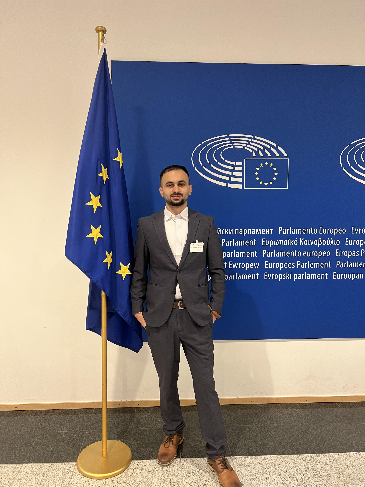
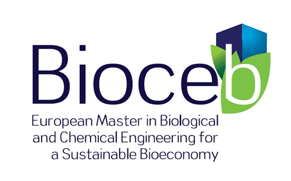
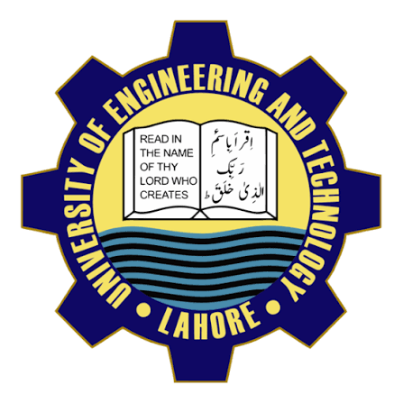

Email: makhan7x@gmail.com
Phone: +33 605 830 896
LinkedIn: linkedin.com/in/muhammad-afaq-khan-717560241
Address: Alkmaar, North Holland, Netherlands
Recent Erasmus Mundus Master's graduate in Biological and Chemical Engineering with international academic and industrial experience across the Netherlands, Belgium, France, and Estonia. Experienced in process development, materials engineering, hydrogen technologies, biomass valorization, and sustainable manufacturing through research and industry-driven projects at TNO, CNRS, TalTech, and Zymofix. Strong background in process optimization, analytical characterization, techno-economic assessment (TEA), life cycle assessment (LCA), and data-driven problem solving.
Experienced in EU‑funded hydrogen innovation, industrial biowaste valorization, and academic research on bio‑based materials, emulsions, biopolymers, and enzymatic systems. Brings a systems‑level engineering perspective, strong analytical capabilities, and a commitment to developing scalable, environmentally responsible solutions for the energy transition and bio‑based industries.


University of Engineering & Technology (UET), Lahore, Pakistan
May 2025 – September 2025
Aug 2024 – January 2026
Feb 2025 – Jun 2026
Feb 2025 – Jun 2026
Sep 2025 – Jan 2026
Sep 2025 – Jan 2026
Sep 2025 – Jan 2026
Sep 2025 – Jan 2026
Sep 2025 – Jan 2026
Sep 2024 – Jan 2025
Sep 2024 – Jan 2025
Oct 2024 – Jan 2025
Open to R&D, research, and engineering roles in hydrogen technologies, polymer and materials engineering, bioprocess and process engineering, analytical chemistry, sustainability, and the circular bioeconomy. Interested in translating scientific innovation into practical industrial solutions in bio-based materials, green chemistry, sustainable manufacturing, and energy transition projects.
Email: makhan7x@gmail.com
Phone: +33 605 830 896
LinkedIn: linkedin.com/in/muhammad-afaq-khan-717560241
Address: Alkmaar, North Holland, Netherlands